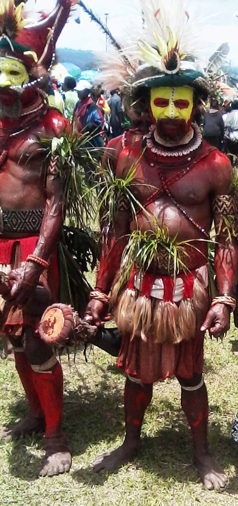
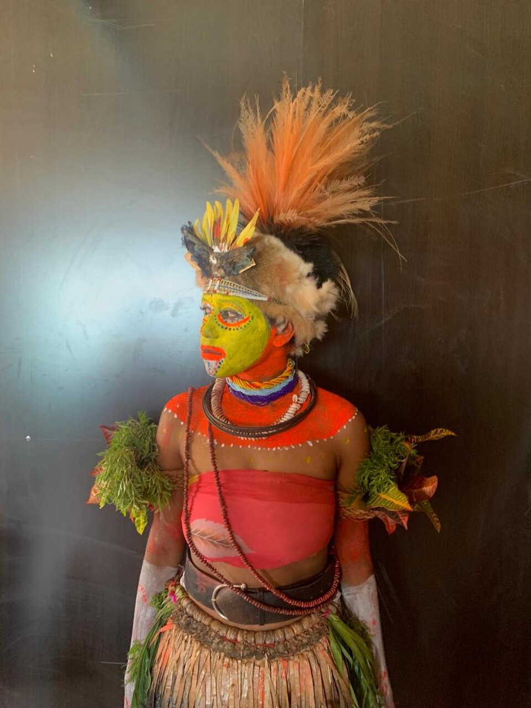
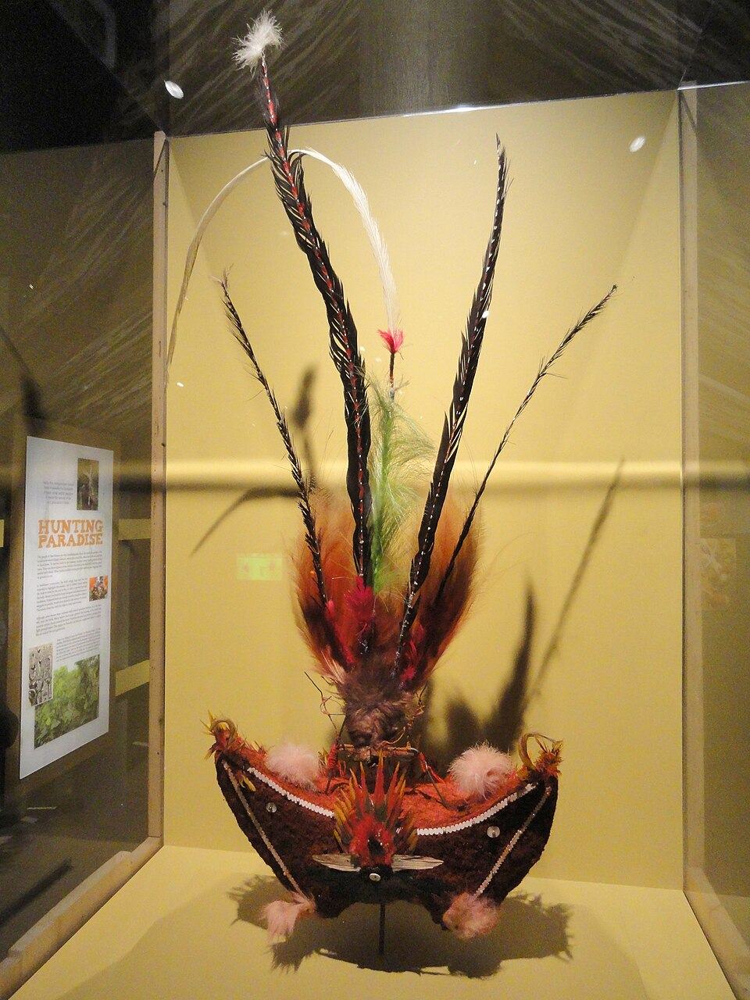
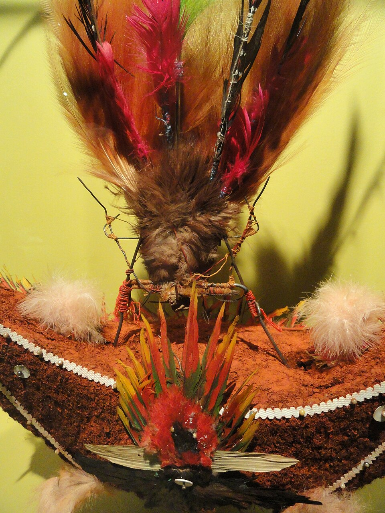

In the highlands of Papua New Guinea lies the Huli tribe, whose men spend more time on their hairstyles than any modern model. But for them, this is not vanity, but a harsh law of the ancestors. The Huli call themselves "bird people" and spend their entire lives striving to imitate the Birds of Paradise that inhabit their forests. The most insane Huli tradition is the growing of ritual wigs. Young men leave their families for special "schools" where they live in total isolation under the guidance of a master.
The Huli are masters of bone knives and bows. Bows are made from ultra-strong wood, and the bowstrings are made from split bamboo. Arrows are often tipped with the bones of the cassowary (a dangerous jungle bird). They are barbed in such a way that it is impossible to pull an arrow out of a wound without damaging the tissue.
In Papua, a pig is not food; it is a universal bank. If you have no pigs, you have no voice at the tribal council and you will never marry. From 15 to 30 pigs are given for a good wife. If one clan accidentally kills a person from another clan, the conflict is extinguished with the "blood price"—dozens of pigs. Pigs are valued so highly that Huli women sometimes nurse orphaned piglets alongside their own children. Pigs live in the same homesteads, and their theft is an automatic declaration of war. If you thought a pig was just livestock to them, think again. Every pig has a name. The owner knows the character of each animal. If a pig falls ill, the owner may spend the night beside it, bringing sacrifices to the mountain spirits. If a man dies, his pig debts pass to his sons.


The Huli have one of the strangest relationship systems in the world—men and women practically do not live together. The man lives in the "Men's House," where sacred objects and weapons are kept. The woman lives in a separate house with the children and pigs. Huli men believe that prolonged contact with a woman weakens their strength, clouds the mind, and ruins the hair (and hair is sacred). A man will not even eat food prepared by a woman during certain cycles. The Men's House is the center of strategy and rituals, an entrance to which is strictly forbidden to women.
Men are convinced that women possess biological energy that is literally "poisonous" to male power. They believe that communicating with a woman accelerates aging, causes the skin to sag, and makes bones brittle. That is why a Huli man will never enter a woman's house and will not allow a woman to step over his legs or personal belongings. This is not hatred; it is "safety protocol" to preserve oneself as a warrior. Even spouses meet on neutral territory to minimize the risk of "contamination" by female energy.
In the jungles of Papua, land is the primary value, and they are constantly at war for it. Huli villages are not just huts; they are fortifications. Between the gardens and the houses, the Huli dig deep trench-labyrinths. The walls of these moats can reach 3 meters in height with a palisade. This is done so that during a sudden enemy attack, one can move unnoticed between houses. Logs are thrown across the moats and removed at night. Thus, the homestead turns into an impregnable castle in the middle of the jungle. This is protection not only from neighbors but also from evil spirits.
Raising a Huli boy is a grim path of transformation into a "bird-man." At the age of 14–15, boys head to forest wig schools. To ensure the hair grows thick and in the correct shape, a student is obliged to sleep on a "kali"—a wooden neck support. The head must hang in the air. If a boy rolls over in his sleep and crushes the growing hair, the entire training starts over. They sleep only on their backs, remaining motionless all night. This fosters fantastic self-control. The school teacher (the wig master) monitors the students' diet. Fatty and sweet foods are forbidden. Only certain roots and water are allowed. Three times a day, they sprinkle the hair with enchanted water. It is believed that if the diet or hygiene rules are broken, the wig will "die."


Students are forbidden to look at women or even at the mirrored surface of water outside of rituals, so as not to "jinx" the growth of their hair. Each school has its own secret spring. Students drink water in a special way—without touching the vessel with their lips, so as not to desecrate the purity of the element. The wig master recites spells during this time, calling upon the spirits of forest birds to "share their plumage." When the hair reaches the desired length, it is cut in one layer and formed into a frame. One such wig can "grow" for up to 18 months. Students who have grown several wigs can sell them to those whose hair grows poorly. This is an entire economy within the tribe. Then it is decorated with the feathers of birds of paradise, cuscus tails, and flowers.
Boys are taught from childhood that the clan is everything. You are part of a combat unit. A child receives their first toy bow at age 3. By age 10, they must be able to hit a bird in flight. Children are forced to memorize the boundaries of their clan's lands. Losing a meter of land is a disgrace for generations.
When the Huli put on their best wigs and paint their faces with yellow clay, the Mali dance begins. Warriors stand in a line and begin to jump in place synchronously. At this time, the feathers of birds of paradise on their heads sway, creating the illusion of a taking-off flock. The dances are accompanied by the beating of "kundu" drums (hourglass-shaped wood with snake skin). The rhythm is so powerful that it can be heard several hills away—this is a signal to neighbors of the clan's strength and unity. The kundu drum is shaped like an hourglass. The membrane is made exclusively from the skin of a water snake. To make the skin stretch perfectly, it is glued with human blood or tree sap. The sound of the kundu is a low, vibrating hum. At a great distance, it sounds like the roar of a huge beast. The Huli use it to transmit messages between hills: the number of beats can signify either the start of a festival or the approach of an enemy.
Yellow clay ("ambua") is considered sacred. Before a dance or battle, a Huli man applies it to his entire face. The patterns must be perfectly symmetrical. This shows the purity of the warrior's thoughts. Red circles are often drawn around the eyes, making the gaze frightening and piercing, like that of a bird of prey. "Ambua" clay is not just paint. The Huli believe it is the excrement of deities that fell to the earth at the beginning of time. Before applying the clay, the face is smeared with cassowary or pig fat. This creates a "glow effect," which in the sun makes the warrior look like a deity. Red ochre: It is mined in volcanic areas and used only for war paint. If a warrior completely paints over the yellow with red, it means peace is over; a war of extermination has begun.
Revenge (Payback): If your relative is wronged, you are obligated to take revenge. But revenge for the Huli is mathematics. If a pig is stolen from you, you steal a pig. If someone is killed, you must kill. If you do not want war, you pay a huge fine in pigs. Despite their terrifying appearance, the Huli are among the most hospitable people if you come in peace. But their politeness is the politeness of a man armed to the teeth. They say: "We smile at a friend, but our bow always lies on the left shoulder."
The Huli are living proof that one can live in the 21st century while completely ignoring its rules. They do not want to trade their wigs for caps or pigs for dollars. In their world, a person's value is determined by their discipline in wig school and their loyalty to their clan. Being a Huli is expensive and painful (remember sleeping on the wood). But it is this complexity of tradition that makes their culture impenetrable to the outside world. As long as Huli men look into the reflection of the water while applying yellow clay, the jungles of Papua remain alive.